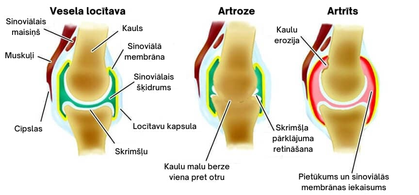
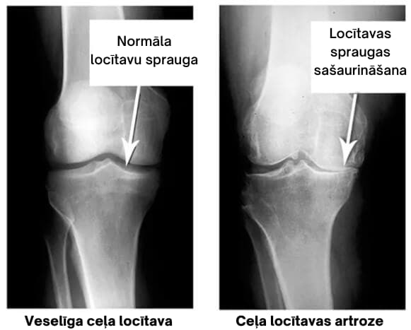
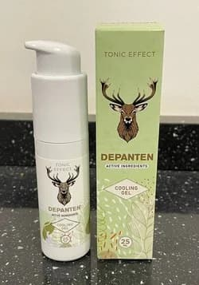
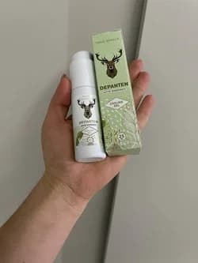
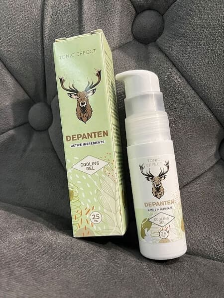

Aizliegts: 4 dabīgas sastāvdaļas mazina locītavu sāpes, atjauno skrimšļus un atjauno locītavu aparātu!
Materiāls ir atjaunināts:
Cita raidījuma filmēšanas laikā notika nepatīkams incidents, kas apdraudēja Neatliekamo zāļu departamenta vadītāja reputāciju. Slavenais eksperts ar savu paziņojumu pārsteidza studijā klātesošos. Taču īpaši smagi cieta medicīnas ierēdņi.
Viņa atklāti paziņoja: "Jūs piepildāt ēteru ar informāciju par vīrusu, bet novēršaties no problēmas, kas ik gadu Latvijā dara neveselus miljoniem cilvēku! Kāpēc neviens nerunā par locītavu slimībām? Kāpēc jūs visi klusējat par to, ka šādām problēmām jau ir zāles ?
Katru dienu mēs piešķiram III grupas invaliditātes statusu simtiem pacientu! Un tas notiek laikā, kad ir pieejami mūsdienīgi, efektīvi terapijas līdzekļi, kas var palīdzēt atgūties visvairāk novārtā atstātām slimībām.
Kāpēc tas notiek? Kamēr cilvēki gatavo ratiņkrēslus, tērē milzīgas naudas summas aptiekās par bezjēdzīgiem manekeniem un velnišķīgās mokās krīt sāpēs, jūs nevēlaties palaist garām tirgu līdzeklim, kas viņiem patiešām varētu palīdzēt?
Ak jā, Latvijā varas iestādes par cilvēkiem nedomā principā.
Jūs esat aizmirsuši par Hipokrāta zvērestu! Jūs esat visus iebiedējuši ar šo vīrusu, un jūs zināt, ka no locītavu slimībām cieš daudz vairāk cilvēku! Un viņiem sāp katru dienu! Vairāk sāpju, nekā tu jebkad sapņo!
Un speciālisti, kas sēž savos tīrajos kabinetos un atpūšas ārzemēs? Vai jūs domājat, ka viņiem rūp vienkāršie cilvēki? Viņi stundām ilgi sēž, kārto papīrus un pat neskatās uz cilvēku, kurš pie viņiem nāk ar pēdējo cerību!
Bet tas vēl nav vissliktākais!
Reimatoīdais artrīts palielina venozo trombemboliju komplikāciju biežumu, kas 98 % gadījumu ir letālas. Citi nāves cēloņi no locītavu slimības ir infekcijas komplikācijas un nieru mazspēja, kas gandrīz vienmēr attīstās saslimšanas stad ijā.
Kā jūs uzdrīkstaties pēc visa tā neļaut pārdot produktus, kas varētu glābt miljoniem cilvēku valstī? Kas jūs par neliešiem esat...!" - apgalvoja Diāna Mihai, viena no uzaicinātajām ekspertēm, taču pārējie dalībnieki burtiski uzbruka viņai, apklusinot viņu.
Studijā valdīja apjukums. Eksperti - Veselības ministrijas pārstāvji un Rīgas klīniku speciālisti - sāka strīdēties, pārtraucot viens otru. Raidījums tika steigšus pārtraukts, un ātri tika pārraidīta reklāma. Diāna Mihai nespēja to izturēt un pameta studiju .
Skatītāji ilgi atcerējās šo incidentu.
Mēs nolēmām izpētīt un intervēt Diānu Mihai atsevišķi.
Atbild uz jūsu jautājumiem:
Diāna Mihai
Praktizējošs eksperts, pedagogs, pētnieks, sabiedriskais darbinieks
40 gadu darba pieredze.
Nadežda Strēlnieks: "Diāna, šķiet, ka visi jūsu kolēģi zina par televīzijas skandālu. Kā jūs nebaidāties veikt šādu darbību?"
Diāna Mihai: "Es apzinājos visus riskus, bet vairs nevarēju klusēt. Tie ir birokrāti, kas sēž savos kabinetos un paraksta papīrus, kamēr es redzu cilvēkus, kuri katru dienu nāk pie manis un sāpēs sāp. Es zinu, kā viņiem palīdzēt, bet nevaru, jo ir korumpēti ierēdņi un alkatīgi farmaceiti.
Daudzi velk, iznīcinot locītavas un nogriežot ceļu uz normālu dzīvi."
Nadežda Strēlnieks: "Jūs minējāt biedējošus datus. Vai tiešām locītavu slimības var izraisīt tik nopietnas sekas?"
Diāna Mihai: "Šī ir lielākā kļūda, ko daudzi cilvēki pieļauj - nepietiekami novērtēt problēmu. Locītavas nesāk sāpēt pēkšņi. Tas nav vīruss, kas tevi nomāc no kājām tajā pašā dienā. Sāpes locītavās veidojas pakāpeniski, pacientam attīstās tā sauktā lojalitāte - tas ir tad, kad cilvēks pierod pie sāpēm un spēj ar tām sadzīvot.
Daudzi kavējas, neveic pienācīgus pasākumus un glābjas ar pretsāpju līdzekļiem, slimība progresē, iznīcinot locītavas un nogriežot ceļu uz normālu dzīvi un pilnvērtīgām kustībām.
Šajā gadījumā artrīts un osteoartrīts ļoti bieži skar darbspējīgus cilvēkus, kas nozīmē, ka cilvēki kļūst darbnespējīgi vai arī viņiem pastāvīgi jācieš sāpes, lai nopelnītu iztiku.
Saskaņā ar oficiālajiem datiem Latvijā vien ar osteoartrītu slimo vairāk nekā 750 tūkstoši cilvēku un ar reimatoīdo artrītu - aptuveni 200 tūkstoši cilvēku (no tiem aptuveni trešdaļa ir ar smagu invaliditāti).
Artrīta un osteoartrīta izplatība palielinās. Piemēram, laikposmā no 2010. līdz 2020. gadam osteoartrīta izplatība pieauga par 48%. Osteoartrīts sastopams katram trešajam pacientam vecumā no 45 līdz 64 gadiem un 60-70 % pacientu vecumā virs 65 gadiem.
Saskaņā ar starptautisko statistiku datiem ceļa locītavas osteoartrīts ir ceturtais galvenais invaliditātes cēlonis sievietēm un astotais galvenais invaliditātes cēlonis vīriešiem.
Aplūkojiet šos attēlus, jūs varat redzēt, ka labajā attēlā nav locītavu spraugas, kauli berzējas viens pret otru, izraisot lielas sāpes. Un šo procesu ir ļoti grūti apturēt!
Kā jūs domājat, cik ilgā laikā audu audi degradējas un locītava nolietojas?"
Nadežda Strēlnieks: "Mm... pieci līdz desmit gadi?"
Diāna Mihai: "Kļūda! Tas notiek tikai 2-3 gadu laikā. Īpaši, ja organismam trūkst vitamīnu un uzturvielu vai ja tas ir novājināts vecuma vai hronisku slimību dēļ."
Nadežda Strēlnieks: "Kādi cēloņi veicina locītavu slimību attīstību?"
Diāna Mihai: "Iemesli var būt dažādi."
Galvenie osteoartrīta cēloņi
- Visbiežākais iemesls ir trauma.
- Iedzimta locītavu displāzija - kaulu locītavu virsmu anomālijas (piemēram, displastiska koksartroze). Šādā gadījumā locītavas ir pārāk kustīgas, tās tiek vairāk noslogotas un ātrāk nolietojas.
- Ilgstošs artrīts (reimatoīdais artrīts, locītavu tuberkuloze u. c.). Metabolisma traucējumi sinoviālajā šķidrumā izraisa skrimšļa nepietiekamu barošanu, palēnina atmirušo šūnu atjaunošanos un izraisa skrimšļa bojāšanos.
- Pārmērīga fiziska slodze, jo īpaši profesionālā sportā vai monotonās darbavietas aktivitātēs. Ir novērots, ka šuvēji bieži cieš no roku locītavu artrīta, savukārt strādnieki, kas izmanto domkratu, bieži cieš no elkoņa un plecu locītavu artrīta. Citiem vārdiem sakot, pirmkārt un galvenokārt cieš skrimšļi, kas ilgstoši ir bijuši visvairāk noslogoti.
- Hormonālie traucējumi. Sievietēm tas bieži ir saistīts ar menopauzi.
Nadežda Strēlnieks: "Programmā jūs teicāt, ka zināt, kā palīdzēt cilvēkiem. Vai tā ir taisnība?"
Diāna Mihai: "Jā, es zinu. Latvijā bija brīnišķīgi zinātnieki, kuri tolaik - es runāju par 80. gadiem - radīja visefektīvāko līdzekli, kura pamatā bija augu izcelsmes sastāvdaļas!
Jau kopš seniem laikiem cilvēki ir izmantojuši dabas dāvanas, izmantojot šīs sastāvdaļas sāpju un iekaisumu mazināšanai. Daudzas no tām jums ir pazīstamas un tiek izmantotas dažādu slimību terapijai. Taču tikai mūsu zinātnieki ir spējuši izstrādāt formulu, kas ietver vairākas spēcīgākās ārstnieciskās sastāvdaļas uzreiz:
- Eikalipta eļļa. Eikalipta ekstrakts ir tīrs molekulu koncentrāts, kas neticamā ātrumā veido skrimšļus un atjauno tos pašus skrimšļus.
- Arnikas ekstrakts. Arnikas ekstrakta īpašā iezīme ir tā unikālā spēja sašķidrināt un atbrīvoties no sāls nogulsnēm. Tas acumirklī atbrīvo sāļu "nogulsnes" locītavās un pēc 15-19 dienu regulāras lietošanas pilnībā izšķīdina sāļus locītavās un mugurkaulā.
- Mentols. Tas bloķē sāpes un darbojas kā imūnstimulators, atjaunojot autoimūno procesu organismā, kas ir pamatā locītavu slimībām un skrimšļa bojājumiem.
- Kampars. Kamparam piemīt īpašība pastiprināt zāļu sastāvdaļu iedarbību. Un, otrkārt, tas aizsargā kaulu un skrimšļu audus. Citiem vārdiem sakot, pirmie četri augi dziedē locītavas un skrimšļus, bet kampars saglabā rezultātu gadu desmitiem.
Tikai nesen entuziastiski zinātnieki beidzot atcerējās šo formulu. Viņi uzaicināja mani uzraudzīt projektu. Vairākus gadus mēs pilnveidojām formulu, ņemot vērā jaunās tehnoloģijas, līdz tika radīts unikāls produkts, kas var palīdzēt pacientiem ar smagākajām artrīta, artrīta un citu locītavu slimību stadijām - .

ne tikai dziedē locītavas! Tas dziedē visu ķermeni!
Pētījumi liecina, ka vairāk nekā 90 % pacientu, kuri lietojuši vienu mēnesi vai ilgāk, ir ziņojuši par veselības stāvokļa uzlabošanos - normalizējies asinsspiediens, viņi jūtas labāk, viņiem ir vairāk enerģijas, bet diabēta slimniekiem samazinājies cukura līmenis asinīs. Daudzi ir ziņojuši par labāku miegu un gremošanu.
Vairākus gadus pēc lietošanas nevienam no eksperimenta dalībniekiem nebija vīrusu infekciju.
Šis fenomens ir ieinteresējis zinātniekus, un viņi ir konstatējuši, ka briežu ragi papildus iedarbojas uz cilvēka organismu, proti, stiprina imūnsistēmu. Tādējādi ne tikai atjauno locītavas, bet arī pozitīvi ietekmē organismu kopumā.
Apkopojot pētījuma rezultātus, var secināt, ka tie ir šādi:
1. Locītavas un mugurkauls
98,3 % pacientu ir atvieglotas locītavu un mugurkaula sāpes. Tas ir praktiski simtprocentīgi! Nekad iepriekš neko līdzīgu neesmu redzējis, neviena cita terapija nav bijusi tik efektīva.
Pateicoties tā dabiskajam sastāvam un ķīmisko vielu trūkumam, cīnās ar slimības cēloni. Ar tā palīdzību jūs varat atbrīvoties no pietūkuma, iekaisuma un sāpēm locītavās un pilnībā atjaunot to funkciju mājās tikai 2-3 nedēļu laikā.
ir efektīvs pret dažādas etioloģijas artrītu un artrozi, infekcijām, ar vecumu saistītām izmaiņām, traumām, paaugstinātu slodzi un ir piemērots visu muskuļu un skeleta slimību terapijai.
2. Dzīvotspēja un aktivitāte
Ikviens, kurš ir lietojis , ziņo par pēkšņu enerģijas pieplūdumu. Mentols stimulē noteiktu hormonu, tostarp jaunības hormonu un laimes hormona dopamīna, veidošanos. Ir vēlme kustēties, nogurums nav jūtams. Miegs normalizējas, bezmiegs vairs nav problēma. Notiek cilvēka bioloģisko sistēmu šūnu atjaunošanās.
3. Imunitāte
Kursa ar laikā pacientiem ir uzlabojusies asinsapgāde kaulu smadzenēs, kas ražo imūnās šūnas. Tas noved pie organisma aizsargspēju pastiprināšanās.
Imunitāte nav tikai aizsardzība pret vīrusiem. Spēcīgas imūnsistēmas galvenā funkcija ir aizsargāt pret vēža šūnām. Spēcīga imūnsistēma savlaicīgi atpazīst un iznīcina vēža šūnas. Tas novērš pilnvērtīga audzēja veidošanos.
Imunitāte, kas darbojas vismaz 50 % apmērā, jau ir nepārvarams šķērslis vīrusiem. Un tas ir ļoti svarīgi arī šodien.
ir vairāk nekā tikai gēls locītavu terapijai. Tas ir produkts, kas pilnībā atjauno jūsu veselību! Parasti locītavu slimības pavada citas problēmas, un lielāko daļu no tām var atrisināt ar .
Mani pārņem lepnums par mūsu zinātnieku attīstību, es patiešām ceru, ka viņi drīz saņems pelnītas balvas un pasaules medicīnas sabiedrības atzinību!
Rezumējot, es varu parādīt jums visas priekšrocības uz pirkstiem:
- Tas ir dabisks līdzeklis, kas ļauj atbrīvoties no locītavu un muguras sāpēm tikai 30 dienu laikā mājās, neapmeklējot speciālistu vai neveicot operācijas.
- Produkts ir sertificēts Latvijā, tas ir pilnīgi dabīgs un tam nav blakusparādību.
- Tam ir plašs iedarbības spektrs un kompleksa iedarbība uz sāpīgām locītavām.
- Indikācijas: visām artrīta un osteoartrīta stadijām, iekaisumiem un infekcijām, ar vecumu saistītām izmaiņām, traumām, pārpūlei un iedzimtiem defektiem.
- ir visefektīvākais un drošākais līdzeklis locītavu veselībai (klīniski pierādīts).
SVARĪGI:
Pētījumos ir konstatēts, ka
- labākais laiks, kad sākt locītavu terapiju. Stabilizējot vidējo temperatūru,
organismā paātrinās vielmaiņas procesi un pastiprinās terapijas iedarbība. Terapija ir par 37% ātrāka nekā citos gadalaikos.
Varētu domāt, ka pēc šāda atzinuma aptiekām būtu jāstāv rindā pēc tiesībām pārdot . Bet nē. Pilnīgs, pilnīgs klusums. It kā neviens nebūtu pamanījis šo izrāvienu.
Un medicīnas bizness ir pat naidīgs pret šo narkotiku. Tiem ir simtiem zāļu nosaukumu, pārdošanas un ieņēmumu plānu. Un s viens pats nevar īstenot šos plānus. Cilvēki pēc dažām procedūrām aizmirst ceļu uz privāto aptieku.
Tāpēc ir tāds naids pret u. To nav iespējams noniecināt. Galu galā ir starptautiska atzinība, sertifikāti, zinātniskie raksti, tūkstošiem apmierinātu pacientu. Tāpēc tika izvēlēta boikota stratēģija. Izlikties, ka a nav. Un, kad es par to sāku runāt ēterā, tas izraisīja klaju agresiju pret mani."
Farmaceitu arodbiedrības priekšsēdētājs, uzzinājis par u, nolika klausuli.
Deniss Voroņins. Latvijas Privāto Aptieku ķēžu savienības priekšsēdētājs.
Mēs zvanījām valsts galvenajam farmaceitam un vēlējāmies uzzināt, kāpēc nevienā no aptiekām nav
.
- Deniss, sveiki! Vai jūs varētu mums pastāstīt, kāpēc Latvijas aptiekas ignorē ? Vai esat
par
to dzirdējuši?
- Kāpēc jūs provocējat!? Es neatbildēšu uz šādiem jautājumiem!!!! Tas nav jūsu lieta!
- Hooters ...
Kā es varu saņemt ?
Nadežda Strēlnieks: "Pēc šīs sarunas ar valsts galveno farmaceiti kļuva skaidrs, ka nav un nebūs pieejams aptiekās. Bet jūs to joprojām varat saņemt, vai ne?
Diāna Mihai: "Jā, visi Latvijas iedzīvotāji var pasūtīt tiešsaistē tieši no rūpnīcas. Izņemot dažus reģionus, kas ir ļoti ļaunprātīgi izmantoti spekulācijām."
Nadežda Strēlnieks: "Kāpēc var izrakstīt tikai tiešsaistē?"
Diāna Mihai: "Tas tiek darīts trīs iemeslu dēļ:
- Kvalitātes nodrošināšana. tiek nosūtīts tieši no rūpnīcas klientam.
- Aizsardzība pret starpniekiem. Lai neviens nevarētu nopelnīt no tālākpārdošanas.
- Ātra mērķtiecīga piegāde."
Reģionālie pabalsti pensionāriem.
Diāna Mihai: "Tagad visos reģionos ir sociālā atbalsta fonda programma. Šīs programmas ietvaros var pasūtīt ar atlaidi līdz pat 50% apmērā. Tas tiek darīts kā daļa no reģionālās slimību profilakses programmas.
Pabalstus galvenokārt var saņemt personas, kas vecākas par 47 gadiem un dzīvo reģionos ar augstu epidemioloģisko situāciju.
Tāpēc es stingri iesaku cilvēkiem šajos reģionos: netērējiet savu laiku! Nav zināms, cik ilgi programma turpināsies un cik ilgi saglabāsies krājumi.
Iegādājieties tagad!
Diāna Mihai: "Lai saņemtu ar sociālā atbalsta atlaidi, piedalieties izlozē, pēc tam pieteikuma veidlapā norādiet savu vārdu, uzvārdu un numuru un noklikšķiniet uz "Saņemt ".
Svarīgi: no viena tālruņa numura pieņem tikai 1 pieteikumu!
Pieteikumi tagad tiek pieņemti un apstrādāti visu diennakti. Taču, ņemot vērā lielo darba slodzi, jums, iespējams, nāksies pagaidīt nedaudz ilgāk.
PIEVIENOTS | REDAKCIONĀLA PIEZĪME:
Lielā pasūtījumu apjoma dēļ esam spiesti ierobežot akcijas nosacījumus.
Pašlaik akcija ir spēkā tikai
līdz
2022
gadā (ieskaitot). Līdz tās beigām oriģinālais
produkts ir pieejams ikvienam, kas to vēlas, izmantojot zemāk redzamo atlaižu
izlozi!
Brīdinājums Uzmanieties no viltojumiem!
Preces var iegādāties tikai Latvijā, piedaloties izlozē par atlaidi līdz pat 50% apmērā.
Man briesmīgi sāpēja locītavas. Es visu laiku gāju pie speciālistiem, viņi izrakstīja tabletes, un gadā aptiekā iztērēju aptuveni 4 700 euro. Taču sāpes nekad nepazuda. Draugs man atnesa bezmaksas želeju. Viņš saka, ka tas viņam ļoti palīdzēja, es to izmēģinu. Es jums uzrakstīšu rezultātus.
Šie azartspēļu speciālisti un aptiekas tikai cenšas no mums izvilināt naudu!
Es izmantoju , līdz šim esmu ļoti apmierināts ar to! Tā nav reklāma, tikai cilvēka
ieteikums.

Vai beidzot ir ko labu teikt! Es grasos klausīties viņas un pasūtīt kādu tik ilgi, kamēr ir atlaide.
Es jau daudzus gadus sirgstu ar artrītu. Man tik ļoti sāp rokas, ka es nevaru strādāt pat mājās, nemaz nerunājot par dārzu. Un tuvojas pavasaris, man viss jāsagatavo. Esmu izmēģinājis tik daudz dažādu līdzekļu, un visi bez rezultātiem. Es neesmu izlēmis uz ilgu laiku, bet joprojām twirled šo ruleti, Es uzvarēju 40% atlaide un mans iesaistīti, Es domāju, ka, nebija, pasūtīja šo . Pirms divām dienām to paņēmu no pasta nodaļas. Es mēģināju to vakar, un šķita, ka tas atvieglo. Šodien es vēl neesmu veikusi dabbed, tagad es gatavojos iet.
Labs līdzeklis, palīdzēja manam vīram mazināt sāpes. Es devos makšķerēšanas braucienā, un vakarā man izgāja mugura. Labi, ka manai māsai bija šis , viņa to reiz pasūtīja arī internetā, jo piedalījās loterijā. No rīta pamodos bez sāpēm un bez raizēm devos makšķerēt.
Pastāstiet, vai jums ir bijušas kādas alerģijas? Man ir nepanesība pret gandrīz visiem medikamentiem, un mana dzirde jau ilgu laiku ir bijusi problēma...
Alina, tas ir dabīgs, galvenokārt ekstrakti. Ja labi panesat dabiskus līdzekļus, tā ir lieliska iespēja!
Arī es par to esmu kaut kur dzirdējis. Kāds mans paziņa bija pasūtījis kādu sev. Man pašam šīs problēmas ir bijušas jau divus gadus, un tagad es sāku justies neērti. Es domāju, ka es pasūtīšu un izmēģināšu to.
Paldies. Ja ne jūs, es neticētu šo zāļu efektivitātei! Mans vīrs briesmīgi cieta. Tagad viņš
atkal skraida pa māju kā 18 gadus vecs.

Arī sev pasūtīju no oficiālās tīmekļa vietnes. Palīdzēja man lieliski. Ja jums ir problēmas ar locītavām, es to ļoti iesaku, ticiet man, tas visu atrisinās. Un piegāde ir ātra, es to saņēmu 3 dienu laikā.
Es vienmēr uzticos speciālistam, viņas šovi mani ir glābuši daudzas reizes! Bet ar ko ir labāks par parastajiem līdzekļiem, kas tiek izrakstīti katrā poliklīnikā?
Runa ir par dabīgām sastāvdaļām, kas nav kaitīgas organismam. Tajā pašā laikā stimulē organisma spējas, "ieslēdzot" to, lai tas pats sevi dziedinātu. Tā ir inovatīva pieeja, un ne visi farmācijas uzņēmumi to ir apguvuši, un tā ir dārga tehnoloģija. ir izdevies ievērot šo ideālo formulu.
Man eksperts stāstīja par , bet viņš bija izvairīgs, sakot, ka diez vai to var nopirkt, bet, ja atrastu, tad būtu labi... Lai nu kā, šķiet, ka viņiem tiešām ir aizliegts to pārdot, droši vien grib pārdot citas importētas ziedes, dārgas.
Tas ir lielisks līdzeklis. Esmu bijušais sportists, un visas manas traumas ir atstājušas savu iespaidu. Taču s mani ātri nostādīja uz kājām. Dzīvosim!
Es piedalījos loterijā un laimēju 50% atlaidi! Es nekad dzīvē neesmu neko vinnējis. Man ir artrīts jau piecus gadus, es esmu mocījies, esmu izšķērdējis daudz naudas. Un palīdzēja, dažu dienu laikā samazināja sāpes, mazināja iekaisumu un pietūkumu. Tagad skatieties, ko es daru! Agrāk es vienkārši gulēju kā vecmāmiņa, bet tagad esmu aktīva pensionāre!
Labs līdzeklis, palīdzēja manai mātei, viņa jau ilgu laiku cieš no muguras un ceļgalu sāpēm. Dažu nedēļu laikā viņa varēja pārvietoties pa dzīvokli, nesūdzoties par sāpēm.
Dabas aizsardzības līdzekļi vienmēr ir vislabākie! Arī es ar tabletēm sadedzināju visu barības vadu. Viena ārstē, bet otra kropļo. Tas ir labi, ka arī oficiālā medicīna tagad pāriet uz ārstniecības augiem.
Kauns viņiem! Tik labs līdzeklis, un aptiekās to nepārdod! Tikai tāpēc, lai gūtu peļņu no pensionāru veselības! Lai tie ir nolādēti, negausīgie buržuāzijas pārstāvji!
Pasūtīju vienu sev, vakar paņēmu to pasta nodaļā. Es neticēju, bet tā ir taisnība, viņi atsūtīja visu!!!! Es to uzlieku vakarā un kaut kā jutos labāk. Es joprojām to lietoju.
Es izlasīju rakstu, un tajā bija teikts, ka no aptiekām ir izņemts efektīvs līdzeklis, un tas bija .
Tik daudz labu atsauksmju! Es noteikti tagad uzrakstīšu saviem vecākiem! Paldies!
Godīgi sakot, es īsti neuzticos reklāmām internetā, un to pašu es jutu arī par .
Tomēr es riskēju ar to. Rezultāts mani pārsteidza, un tas nebija ilgi jāgaida. Man tas ļoti
patika. Mana slimība ir artrīts, osteohondroze un izliekums.

Es pasūtīju mammai, kurjers zvanīja, viņš ieradīsies rīt. Viņa vienmēr seko speciālistiem, viņa būs priecīga, ka ieteica to! Par saviem iespaidiem rakstīšu vēlāk
Es vienmēr domāju, ka nekad nespēlēšu atbrīvoties no locītavu sāpēm un nomiršu. Tagad domāju, ka man palīdzēs, vismaz es ceru, ka tā, visi saka, ka tas palīdz.
Un es jau zināju par u. Kādreiz bija forums, kur varēja tieši uzdot jautājumus speciālistiem, un es gāju pie labas sievietes reimatoloģes. Viņa man sniedza tiešsaistes konsultāciju un pastāstīja par šīm zālēm. Bet tolaik aptiekā es to nevarēju atrast. Lieliski ir piedalīties loterijā un saņemt atlaidi!
Viņa ir laba speciāliste, lai gan, piemēram, sieviešu Dr. House! Man ir jāatceras nosaukums, šovasar es to vedīšu pie vecajiem vecīšiem uz laukiem.
Mūsu draugs pārdod privātajā aptiekā par lielu naudu, tāpēc es neuzdrošinājos to iegādāties, man bija žēl naudas. Bet šeit es ieraudzīju akciju un pasūtīju to uzreiz!
Es to nopirku sev, es jau pāris gadus briesmīgi cietu. " palīdzēja pāris nedēļu laikā. Es pat nedomāju, ka tas ir iespējams
Tīmekļa vietnē ir norādīts, ka tiek piedāvātas atlaides līdz pat 50 %, vai tā ir taisnība?
Ja tas ir tik labs, kā viņi saka, tas būs glābējs. Man gadiem ilgi ir bijušas locītavu problēmas, un es esmu alerģisks pret gandrīz visiem medikamentiem.